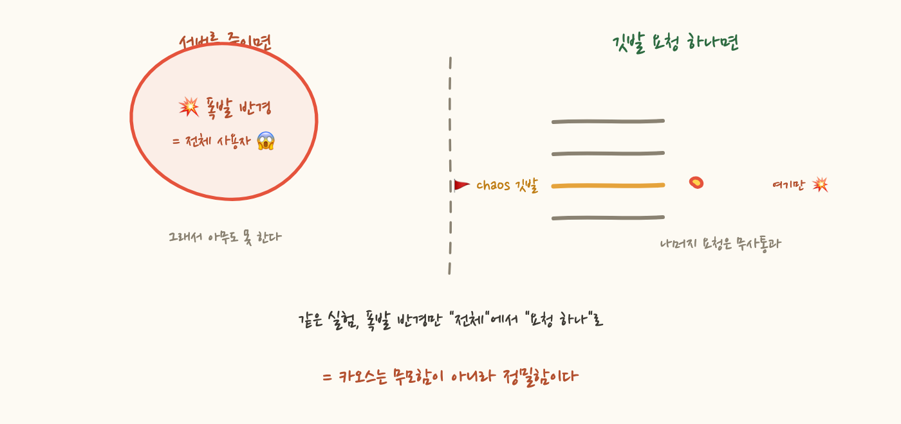

"결제 서비스가 죽으면 주문 서비스는 우아하게 실패할까요?" 이 질문에 자신 있게 답할 수 있는 팀은 드뭅니다. 코드에는 폴백이 있고 테스트도 통과했지만, 진짜 트래픽과 진짜 데이터, 진짜 타이밍에서 검증된 적은 없기 때문입니다. 그래서 누군가 제안합니다. "프로덕션에서 결제 서버를 죽여봅시다."
회의실이 조용해지죠. 폭발 반경이 전체 사용자이기 때문입니다. 그런데 Netflix는 이런 실험을 프로덕션에서 일상적으로 합니다. 어떻게 무모하지 않게 그게 가능할까요? 답은 뜻밖에도, 이 시리즈 내내 깔아온 관측 배관에 있어요.
장애 대응 훈련을 스테이징에서 하면 되지 않냐고 할 수 있지만, 스테이징은 프로덕션의 축소 모형이지 복제가 아니에요. 트래픽 패턴이 다르고, 데이터 분포가 다르고, 캐시 적중률과 커넥션 풀 상태가 달라요. "재고 서비스가 느려질 때 주문이 어떻게 되는가"는 그 시스템이 실제로 받는 부하 위에서만 진짜 답이 나옵니다. 카오스 엔지니어링이 프로덕션을 고집하는 이유예요.
그럼 남는 문제는 하나입니다. 실험은 프로덕션에서 하되, 폭발 반경을 통제해야 한다는 것이죠. 서버를 통째로 죽이는 건 이 조건을 만족하지 못합니다. 더 정밀한 수단이 필요해요.
3편에서 트레이스 컨텍스트가 HTTP 헤더와 메시지 헤더에 실려 서비스와 큐를 건넌다고 했죠. 그 봉투에는 traceparent 말고도 임의의 key-value를 싣는 칸이 있습니다. W3C 표준으로는 baggage라고 해요. baggage에 넣은 값은 트레이스 컨텍스트와 함께 모든 하위 호출, 큐 너머까지 자동 전파됩니다. 우리가 이미 깔아놓은 배관을 그대로 타고 흐르는 거죠.
이제 실험을 다시 설계해봅시다. 결제 서버를 죽이는 대신:
① 깃발 꽂기: 합성 테스트 요청(또는 내부 직원 계정의 요청) 하나에 baggage로 chaos=payment-timeout을 실어 들여보냅니다. ② 선택적 발화: 결제 서비스의 미들웨어는 요청마다 baggage를 확인하고, 깃발이 꽂힌 요청에만 타임아웃을 주입해요. 나머지 수만 개의 실제 요청은 아무 일 없이 지나갑니다. ③ 관찰: 그 요청의 트레이스를 열어 주문 서비스가 폴백을 탔는지, 에러가 사용자에게 어떤 모습으로 전달됐는지 확인합니다. 주입도 관측도 같은 traceId 아래에서 이뤄집니다.
결과적으로 프로덕션에서, 실제 전체 경로로, 폭발 반경은 요청 딱 하나인 실험이 됩니다. Netflix의 FIT(Failure Injection Testing)가 이 방식의 원조 격이고, 요청 단위로 통제되니까 매일 돌려도 되는 거예요. 무모해 보였던 카오스 엔지니어링의 실체는 반경 통제 기술입니다.

한 걸음 물러나서 보면 재미있는 게 보여요. 컨텍스트 전파는 원래 트레이스를 잇겠다는 관측 목적으로 깐 배관이었죠. 그런데 깔고 나니 "요청 하나에 정보를 실어 전체 경로에 흘려보내는" 범용 능력이 생긴 거예요. 실패 주입이 그 위에 올라갔고, 같은 원리로 더 올라갑니다. 특정 요청만 새 버전으로 보내는 카나리 라우팅, 테스트 트래픽임을 전 구간에 알리는 테넌트/트래픽 구분, 요청 단위 기능 플래그까지 같은 배관을 씁니다.
그래서 이 시리즈의 결론이 자연스럽게 나옵니다. 관찰 가능성 작업은 대시보드 예쁘게 만드는 일이 아니라, 요청의 컨텍스트가 시스템 전체를 끊김 없이 흐르게 만드는 플랫폼 공사예요. 그 배관이 튼튼하면 트레이싱은 시작일 뿐입니다. 실험과 배포 전략, 트래픽 제어까지 같은 관 위에 올라갑니다.